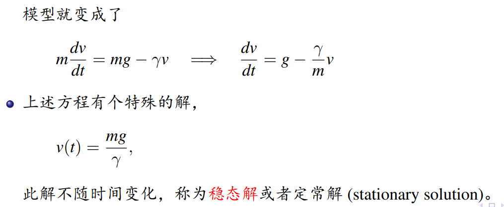
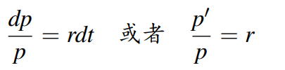
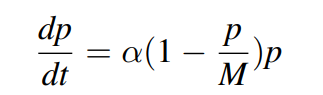
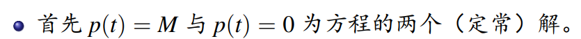
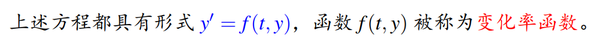
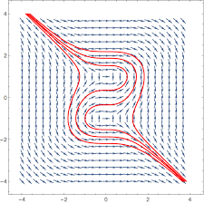
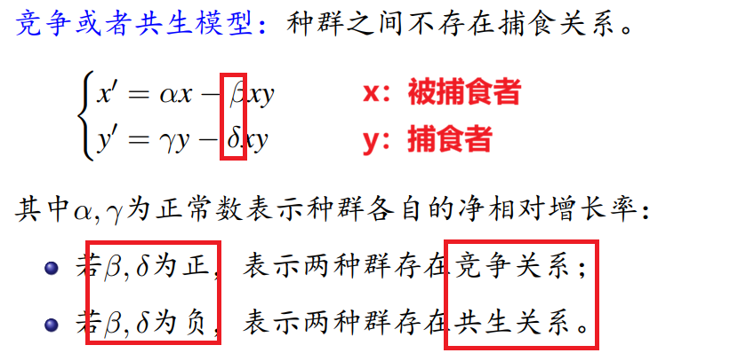
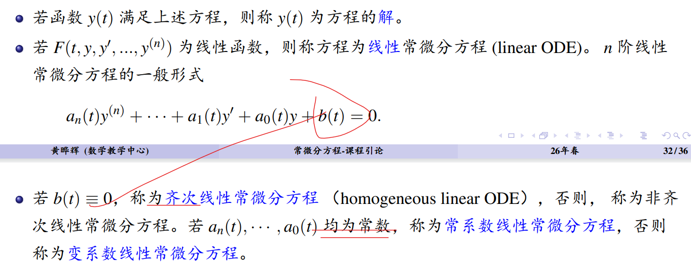

常微分方程
名词解释
通解 + 定解条件 = 特解
唯一解 = 特解
稳态解 = 定常解
稳态解例子

人口模型
1. 指数增长：Malthus模型

2. 存在生存空间约束：Verhulst模型（=Logistic）

裂项积分公式：
1/[(x-a)(x-b)] = 1/(b-a) × [1/(x-a) - 1/(x-b)]
解题思路
- 通过"观察法"先筛选出"定常解"
例：在人口增长模型中，使得增长率=0，对于Verhulst模型
- 变量分离两边积分
- 通解 → 特解
观察法判别

变化率方程
y' = f(y,t)

方向图（流线）

种群生态模型（Lotka-Volterra）

传染病模型
SI模型、SIR模型
一般除种群生态模型定常解好求解，其余的都需通过相图（Phase Diagram）表达求解
N体问题
（待补充）
常微分方程分类

线性
齐次
常系数
非齐次
可降阶
伯努利
线性可变系数
非线性
偏微分方程
自治
* 自治方程少见类型：运输方程、热方程